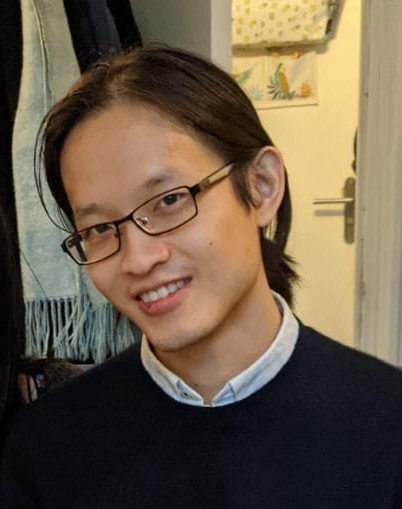

|
Rui Yuan
I am a final-year PhD student jointly at Facebook AI Research (FAIR) Paris and Télécom Paris. I am advised by Alessandro Lazaric (FAIR), Robert M. Gower (Flatiron Institute) and François Roueff (Télécom Paris).
|

|
|
Research
My main research interest is reinforcement learning (RL) and large scale stochastic optimization for machine learning. In particular, I focus on fundamentally better understanding optimization methods applied in RL and designing new efficient practical optimization algorithms to solve RL problems.
|
|
Publications
- A general sample complexity analysis of vanilla policy gradient
Rui Yuan, Robert M. Gower, Alessandro Lazaric
International Conference on Artificial Intelligence and Statistics (AISTATS), 2022
- SAN: Stochastic Average Newton Algorithm for Minimizing Finite Sums
Jiabin Chen*, Rui Yuan*, Guillaume Garrigos, Robert M. Gower
International Conference on Artificial Intelligence and Statistics (AISTATS), 2022
- Sketched Newton-Raphson
Rui Yuan, Alessandro Lazaric, Robert M. Gower
International Conference on Machine Learning (ICML) Workshop on ”Beyond first-order methods in ML systems”, 2020
|
|
Misc
- I received an MSc/BSc in Applied Mathematics from École Polytechnique (diplôme d'Ingénieur) and an MSc in Machine Learning from Université Paris-Saclay (Master Data Sciences). During my studies, I was a Machine Learning intern at Télécom Paris and I was teaching assistant at African Institute for Mathematical Sciences (AIMS) in Kigali, Rwanda, with Prof. Robert M. Gower.
- Feel free to connect on LinkedIn or Twitter.
- Email: yy42606r at gmail dot com
|
Website template from here
|
|